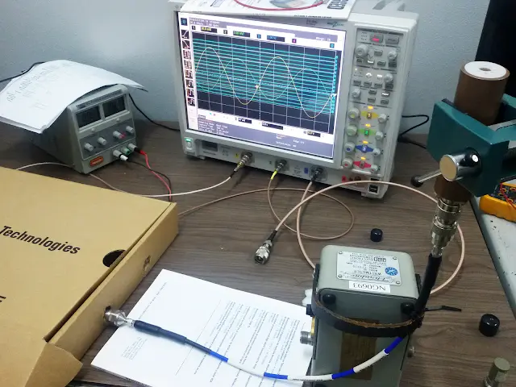
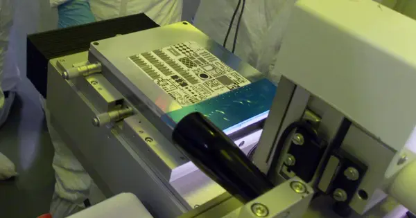
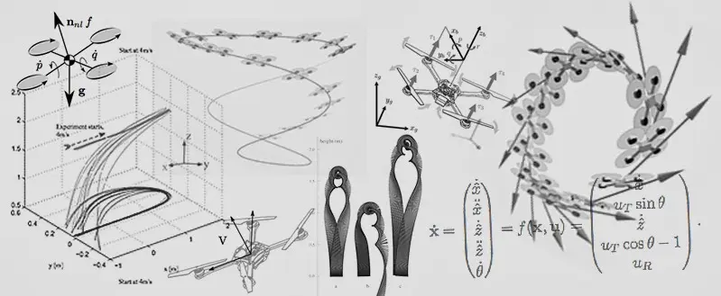

// FORMACIÓN Y DESARROLLO
Medición de permitividad eléctrica en líquidos
La caracterización de las propiedades dieléctricas de los materiales a frecuencia de radio ha ganado cada vez más importancia, en especial en los campos de investigación en circuitos de microondas, ya que permite obtener resultados del comportamiento eléctrico y/o magnético del material.
29 de diciembre de 2015 · 2 minutos de lectura

Este proyecto me dejo pensando cuales son las posibilidades de realizar un enlace refrigerado por un líquido circulando como dieléctrico en el cable. ¿Se podrá realizar un control adecuado del flujo para mantener estable las propiedades de comunicación?.
Para más detalles puedes leer el paper final del proyecto:
Estudios relacionados

Teclado capacitivo
Hoy en día ya no se piensa en botones mecánicos, ya sea porque son ruidosos, se desgastan o porque no, poco estéticos.
Marzo 2015El progreso 67,86%
El progreso es la realización de las utopías. Consiste conservar aquella esencia del ayer que tuvo la virtud de crear ese hoy mejor.
Marzo 2015
Estabilizador de vuelo por filtro PID
Estudio del comportamiento que una aeronave al desplazarse por el aire y su control asociado.
Abril 2014Teclado capacitivo
// EL SIGUIENTE PASO
TU PRODUCTO.
SU PRÓXIMA ETAPA.
Una primera conversación para entender el desafío y ver si puedo aportar valor.
↗ Hablemos de tu proyecto